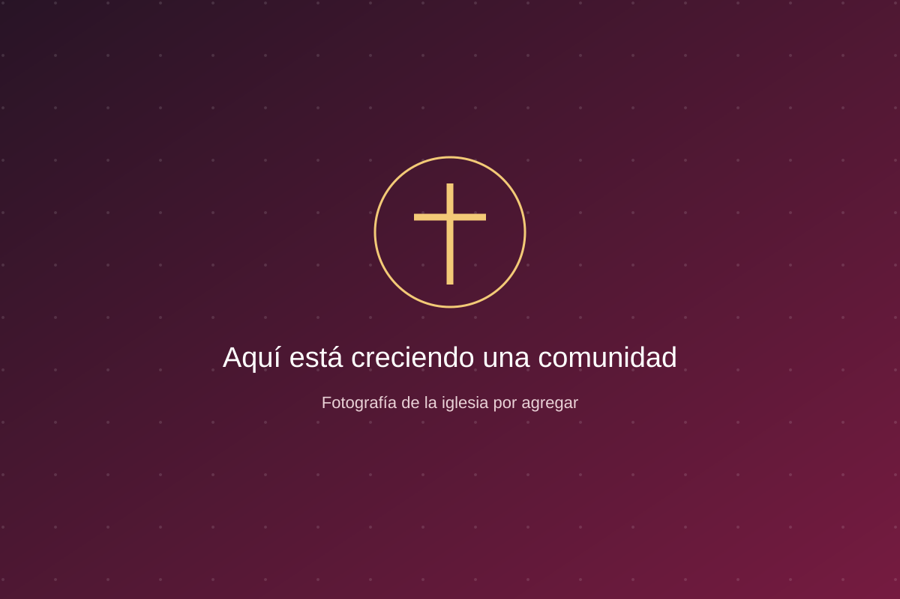
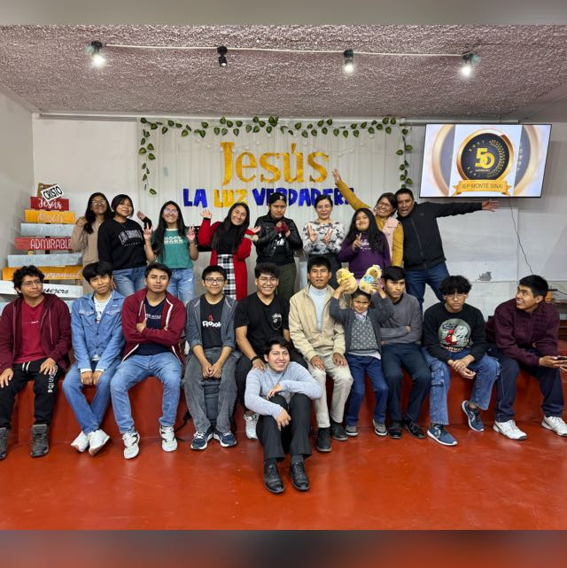
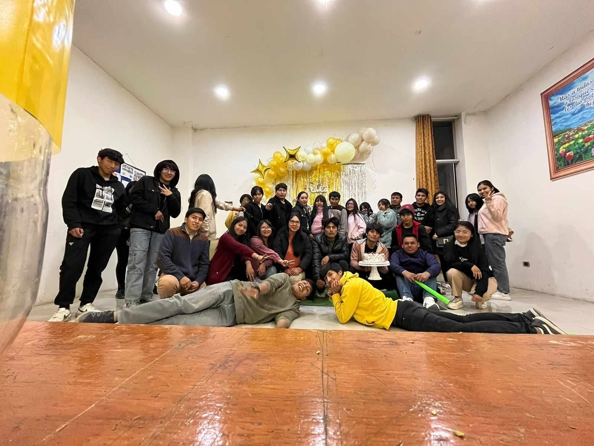

SEC IsraelPronto
Noche de encuentro y alabanza
⌖ Local de la iglesia · por confirmar
DEPEC · AREQUIPA SURESTE
Somos jóvenes de varias iglesias de Arequipa sureste. Nuestras SEC y GJ comparten la fe, la amistad y el deseo de servir a Cristo y a su iglesia.
Nosotros le amamos á él, porque él nos amó primero.
1 Juan 4:19 · Reina-Valera 1909UN VERSÍCULO PARA HOY · 30/10
NUESTRA HISTORIA SIGUE CRECIENDO
Próximo aniversario: 15/11/2026 · 19 años cumplidos
Fecha de demostración; pendiente de confirmarVARIAS IGLESIAS. UN MISMO PROPÓSITO.
Conoce a nuestras SEC y GJ de Arequipa sureste.
SEC Jóvenes mayores
GJ Jóvenes pequeños

Creciendo en fe y compartiendo el camino.
Conoce nuestra iglesia ↗
Nos conocemos bien, compartimos la vida sin filtros y nos une el gozo de adorar juntos. Aquí siempre hay un lugar para ti.
Conoce nuestra iglesia ↗Encuentros que fortalecen nuestra comunidad.
Conoce nuestra iglesia ↗
Construimos comunidad con alegría y propósito.
Conoce nuestra iglesia ↗Pequeños pasos, grandes descubrimientos.
Conoce nuestra iglesia ↗Un espacio para aprender, compartir y crecer.
Conoce nuestra iglesia ↗HAY UN ENCUENTRO ESPERÁNDOTE
Descubre quién organiza, cuándo nos vemos y cómo llegar.
⌖ Local de la iglesia · por confirmar
CORAZONES DISPUESTOS A SERVIR
DEPEC Arequipa Sureste · Personas que acompañan este camino.
Presidente
“Crecer juntos también es cuidar unos de otros.”
Vicepresidente
“Tu historia importa; caminemos en comunidad.”
Secretario
“Servimos con alegría, fe y amistad.”
Tesorero
“Crecer juntos también es cuidar unos de otros.”
Vocal
“Tu historia importa; caminemos en comunidad.”
Asesoría, apoyo y servicio en comunidad.
Líder
“Servimos con alegría, fe y amistad.”
CELEBRAMOS LA VIDA
12 cumpleaños compartidos este mes en nuestra comunidad.
VOCES DE NUESTRA COMUNIDAD
Mensajes de miembros verificados y aprobados por sus líderes.
MOMENTOS QUE SE QUEDAN CON NOSOTROS
Álbumes de DEPEC. Un encuentro, muchas miradas.
Álbum ficticio para mostrar el diseño. Sus fotografías son escenas generadas con IA.
Abrir álbum ↗Álbum ficticio para mostrar el diseño. Sus fotografías son escenas generadas con IA.
Abrir álbum ↗Álbum ficticio para mostrar el diseño. Sus fotografías son escenas generadas con IA.
Abrir álbum ↗Álbum de ejemplo. Los líderes pueden aportar aquí las fotografías del encuentro.
Abrir álbum ↗Álbum de ejemplo. Los líderes pueden aportar aquí las fotografías del encuentro.
Abrir álbum ↗¿ES TU PRIMERA VISITA?
Lo esencial para encontrar tu próximo paso.
Somos una comunidad que reúne a SEC y GJ de varias iglesias de Arequipa sureste, para compartir la fe y servir juntos a Cristo y a su iglesia.
Busca tu SEC o GJ en Encuentra tu comunidad. Su página muestra sus actividades, local, álbumes y directiva. En el calendario puedes seleccionar cada evento para ver su información al lado.
No. Las actividades públicas se pueden ver sin cuenta. Para compartir un mensaje, solicita tu registro como miembro: los líderes de tu iglesia lo revisarán antes de habilitar tu cuenta.
Los líderes de las iglesias pueden aportar fotografías a los álbumes públicos de DEPEC. En los álbumes de una SEC o GJ solo pueden hacerlo sus líderes y los de DEPEC. Cada foto indica quién la subió, su iglesia y el álbum.
Su estado cambia automáticamente a «Finalizado» al pasar la fecha y hora de cierre, usando la hora de Perú. También podrás distinguir eventos próximos, en curso, reprogramados o cancelados.
POR CRISTO Y POR SU IGLESIA
DEPEC
Consulta por nuestras actividades y cómo ser parte de nuestra comunidad.